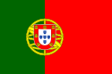

Portugal
Artigo
 Portugal, oficialmente República Portuguesa, é um país soberano unitário localizado no sudoeste da Europa, cujo território se situa na zona ocidental da Península Ibérica e em arquipélagos no Atlântico Norte. O território português tem uma área total de 92 090 km², sendo delimitado a norte e leste por Espanha e a sul e oeste pelo oceano Atlântico, compreendendo uma parte continental e duas regiões autónomas: os arquipélagos dos Açores e da Madeira. Portugal é a nação mais a ocidente do continente europeu. O nome do país provém da sua segunda maior cidade, Porto, cujo nome latino-celta era Portus Cale.
O território dentro das fronteiras atuais da República Portuguesa tem sido continuamente povoado desde os tempos pré-históricos: ocupado por lusitanos e por celtas, como os galaicos, foi integrado na República Romana e mais tarde anexado por povos germânicos, como os suevos e os visigodos. No século VIII, as terras foram conquistadas pelos mouros. Durante a Reconquista cristã foi formado o Condado Portucalense, estabelecido no século IX por Vímara Peres, um vassalo do rei das Astúrias. O condado tornou-se parte do Reino de Leão em 1097, e os condes de Portugal estabeleceram-se como governantes independentes do reino no século XII, após a batalha de São Mamede. Em 1139 foi estabelecido o Reino de Portugal, cuja independência foi reconhecida em 1143. Em 1297 foram definidas as fronteiras no tratado de Alcanizes, tornando Portugal no mais antigo Estado-nação da Europa com fronteiras definidas. Nos séculos XV e XVI, como resultado de pioneirismo na Era dos Descobrimentos (ver: descobrimentos portugueses), Portugal expandiu a influência ocidental e estabeleceu um império que incluía possessões na África, Ásia, Oceânia e América do Sul, tornando-se a potência económica, política e militar mais importante de todo o mundo. O Império Português foi o primeiro império global da História e também o mais duradouro dos impérios coloniais europeus, abrangendo quase 600 anos de existência, desde a conquista de Ceuta em 1415, até à transferência de soberania de Macau para a China em 1999. No entanto, a importância internacional do país foi bastante reduzida durante o século XIX, especialmente após a independência do Brasil, a sua maior colónia.
Com a Revolução de 1910, a monarquia foi abolida, contando entre 1139 e 1910, com 34 monarcas. A Primeira República Portuguesa foi muito instável, devido ao elevado parlamentarismo. O regime deu lugar à ditadura militar devido a um levantamento em 28 de maio de 1926. Em 1933, um novo regime autoritário, o Estado Novo, presidido por Salazar até 1968, geriu o país até 25 de abril de 1974. A democracia representativa foi instaurada após a Revolução de 25 de Abril de 1974, que terminou a guerra colonial. As províncias ultramarinas de Portugal tornaram-se independentes, sendo as mais proeminentes Angola e Moçambique.
Portugal é um país desenvolvido, com um Índice de Desenvolvimento Humano (IDH) considerado como muito elevado. O país foi classificado na 19.ª posição em qualidade de vida (em 2005), tem um dos melhores sistemas de saúde do planeta e é, também, uma das nações mais globalizadas e pacíficas do mundo. É membro da Organização das Nações Unidas (ONU), da União Europeia (incluindo a Zona Euro e o Espaço Schengen), da Organização do Tratado do Atlântico Norte (NATO), da Organização para a Cooperação e Desenvolvimento Económico (OCDE) e da Comunidade dos Países de Língua Portuguesa (CPLP). Portugal também participa em diversas missões de manutenção de paz das Nações Unidas.
Etimologia
O nome Portugal apareceu entre os anos 930 a 950 da Era Cristã, sendo no final do século X que começou a ser usado com mais frequência. O Rei Fernando I de Leão e Castela, chamado o Magno, denominou oficialmente o território de Portugal, quando, em 1067, o deu ao seu filho D. Garcia, que se intitulou rei do mesmo nome. No século V, durante o reinado dos Suevos, Idácio de Chaves já escrevia sobre um local chamado Portucale, para onde fugiu Requiário. Cale, a atual Vila Nova de Gaia, já era conhecida por Portucale no tempo dos godos.
Num diploma de 841, surge por incidente, a primeira menção da província portugalense. Afonso II das Astúrias, ampliando a jurisdição espiritual do bispo de Lugo, diz:
Totius galleciae, seu Portugalensi Provintiae summun suscipiat Praesulatum. (Que ele tome o governo supremo de toda a província da Galiza e de Portugal.)
A etimologia do nome Portugal é incerta. Uma possibilidade é Portus Cale. Outra é Portogatelo, nome dado por um chefe oriundo da Grécia chamado Catelo, ao desembarcar e se estabelecer junto do atual Porto. A primeira vez que o nome de Portugal aparece como elemento de raiz heráldica, é numa carta de doação da Igreja de São Bartolomeu de Campelo por D. Afonso Henriques em 1129.
História
Primeiros Povos
A pré-história de Portugal é partilhada com a do resto da Península Ibérica. Os vestígios humanos modernos mais antigos conhecidos são de homens de Cro-Magnon com "traços" de Neandertal, com 24 500 anos e que são interpretados como indicadores de extensas populações mestiças entre as duas espécies. São também os vestígios mais recentes de seres com caraterísticas de Neandertal que se conhece, provavelmente os últimos da sua espécie Por volta de 5500 a.C., surge uma cultura mesolítica. Durante o Neolítico a região foi ocupada por pré-celtas e celtas, dando origem a povos como os galaicos, lusitanos e cinetes, e visitada por fenícios e cartagineses. Os romanos incorporaram-na no seu império como Lusitânia (centro e sul de Portugal), após vencida a resistência onde se destacou Viriato.
No século III, com as reformas do Imperador Diocleciano, foi criada a Galécia, a norte do Douro, a partir da Tarraconense, abrangendo o norte de Portugal, com capital administrativa em Bracara Augusta. A romanização marcou a cultura, em especial a língua latina, que foi a base do desenvolvimento da língua portuguesa. Com o enfraquecimento do império romano, a partir de 409, o território é ocupado por povos germânicos como vândalos na Bética, Alanos que fixaram-se na Lusitânia e suevos na Galécia. Em 415 os Visigodos entram na Península, a pedido dos romanos, para expulsar os invasores. Face a isso os Vândalos e os Alanos deslocam-se para o norte de África. Os suevos, sobe o Rei Hermerico estabeleceram o seu reino com capital em Braga, enquanto os visigodos fundam o seu reino com capital em Toledo.
Ibéria mulçumana
Portugal continental atual, juntamente com a maior parte da Espanha moderna, fez parte do al-Andalus, entre 726 e 1249, após a conquista da Península Ibérica pelo Califado Omíada. O domínio islâmico durou entre algumas décadas, a norte, e cinco séculos, no sul.
Depois de derrotar os visigodos em apenas alguns meses, o Califado Omíada começou a expandir-se rapidamente na península. A partir de 726, o território português atual tornou-se parte do vasto império omíada centrado em Damasco, que se estendia desde rio Indo no subcontinente indiano ao sul da França, até seu colapso em 750. Naquele ano, o oeste do império ganhou a sua independência sob Abderramão I com o estabelecimento do Emirado de Córdoba. Após quase dois séculos, o emirado tornou-se o Califado de Córdoba em 929, até à sua dissolução, em 1031, em 23 pequenos reinos, chamados taifas.
Por volta de 840-900 a costa Portuguesa foi alvo de várias Incursões Viking (do nórdico antigo víkingr) ou, em português víquingues. Tal como o resto da Europa virada para o atlântico Portugal não escapou impune a estas violentas incursões e, de facto, grande foi o impacto que por cá deixaram. Durante este período o povo muçulmano, Cristão e Judeu que habitava o atual território português viveu uma época de constante medo e receio de uma ameaça nórdica. Estes ataques foram sentidos um pouco por toda a Costa com alguns, inclusive , atacarem a importante cidade de Lisboa. Embora estas invasões fossem cessar por volta do ano 1000 muitas foram as influências que por cá ficaram tais como as imponentes muralhas do castelo de Guimarães mas também a vila de Póvoa do Varzim outrora uma colónia nórdica.
Os governadores das taifas proclamaram-se emires das suas províncias e estabeleceram relações diplomáticas com os reinos cristãos do norte. A maior parte de Portugal caiu nas mãos da taifa de Badajoz da dinastia Abássida, e após um curto período de uma efémera taifa de Lisboa em 1022, ficou sob domínio da taifa de Sevilha dos poetas dos abádidas. O período das taifas terminou com a conquista almorávida, proveniente de Marrocos, em 1086, e tiveram uma vitória decisiva na Batalha de Zalaca. Al-Andaluz foi dividida em diferentes distritos chamados cora. O Algarbe Alandalus, no seu auge, era constituído por dez coras, cada um com uma capital e governadores distintos. As principais cidades do período situavam-se no sul do país. A população muçulmana da região consistia principalmente de ibéricos nativos convertidos ao islão (os chamados muladis) e berberes. Os árabes eram principalmente nobres da Síria e Omã; e apesar de em menor número, constituíam a elite da população. Os berberes eram nómadas originários das montanhas do Atlas e Rife do norte da África.
Recomquista e Condado Portucalense
Em 868, durante a Reconquista, formou-se o Condado Portucalense, o núcleo do Estado Português, estabelecido como parte da Reconquista do reino das Astúrias, por Vímara Peres. O condado tornou-se parte do Reino de Leão em 1097.
Muito antes de Portugal conseguir a sua independência, já tinham havido algumas tentativas de alcançar uma autonomia mais alargada e estas continuaram até a independência por parte dos condes que governavam as terras do Condado da Galiza e de Portucale (com destaque para Nuno Mendes). Para anular as tentativas de independência da nobreza local em relação ao domínio leonês, o Rei Afonso VI entregou o governo do Condado da Galiza (que nessa altura incluía as terras de Portucale) ao seu genro, o Conde Raimundo de Borgonha. Após muitos fracassos militares de D. Raimundo contra os mouros, Afonso VI decidiu entregar em 1096 ao primo deste, o Conde D. Henrique, também ele genro do rei, o governo das terras mais a sul do Condado da Galiza, refundando assim o Condado Portucalense.
Com o governo do Conde D. Henrique, o Condado Portucalense conheceu não só uma política militar mais eficaz na luta contra os mouros, como também uma política independentista mais ativa. Só após a sua morte, quando o seu filho D. Afonso Henriques subiu ao poder, Portugal alcançou a independência, com a assinatura, em 1143, do Tratado de Zamora, ao mesmo tempo que conquistou localidades importantes como Santarém, Lisboa, Palmela (que foi abandonada pelos mouros após a conquista de Lisboa) e Évora, esta conquistada por Geraldo Sem Pavor aos mouros
No dia 23 de maio de 1179, Portugal foi reconhecido pelo Papa Alexandre III como reino e D. Afonso Henriques como rei, na bula Manifestis Probatum.
Terminada a Reconquista do território português em 1249, a independência do novo reino viria a ser posta em causa diversas vezes por Castela
Portugal País

República Portuguesa
Extensão
92,256 Km2
capital
Lisboa
Lingua Oficial
Português
População
Censo de 2021 - 10.343.066 hab.
Densidade Demográfica
112,1 hab / Km2
IDH (2021)
0,866 - muito algo!
Website Governamental
Portugal mapa
Ver o mapa aqui